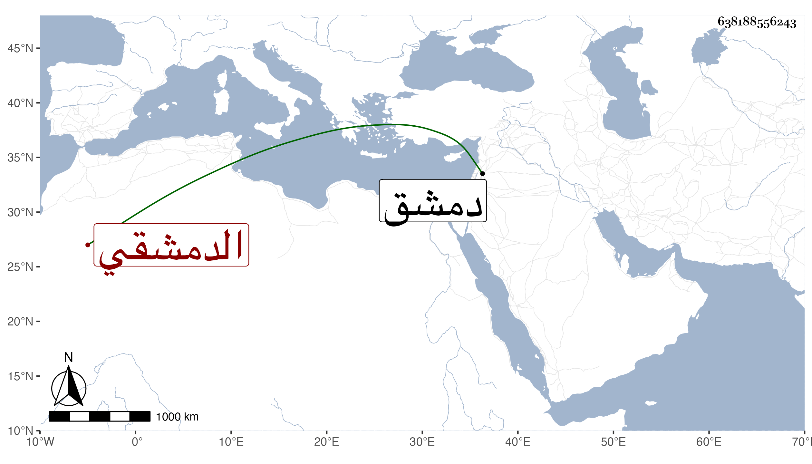

0902Sakhawi.DawLamic.ITO20230111-ara1.EIS1600.638188556243
Biography ID: 638188556243
134
عبد الله بن عمر بن الفقيه إسماعيل بن أحمد الكفربطناوي الدمشقي سبط أبي هريرة بن الحافظ الذهبي أمه صالحة ويعرف بابن الفقيه إسماعيل ويلقب بالفيل لعمله صورة فيل من ثلج . ولد في سنة خمس وتسعين وسبعمائة أو قبلها بكفر بطنا من غوطة دمشق وأخبرنا أنه سمع على جده لأمه ولكن لم يعرف المسموع نعم أنه أخبر أنه قرأ عليه الفاتحة ومن الرحمن إلى آخر القرآن أجاز لنا وكان مذكورا في بلده بالخير والثقة . مات قريب الستين .
